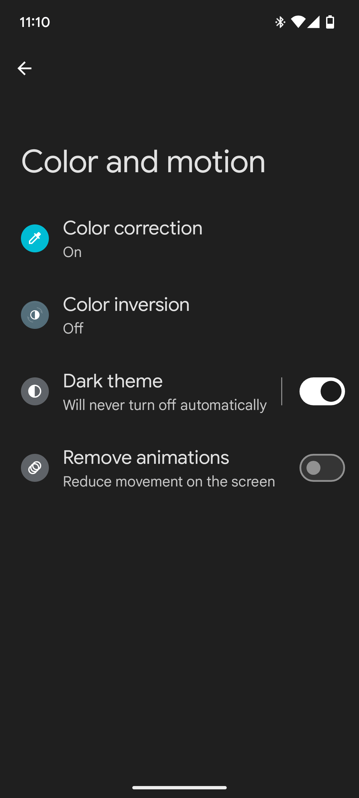

Dumbify your Smartphone: Simplify your device and your digital life
April 15th, 2025. Versión en Español
In recent years, smartphones have been part of the daily lifestyle for millions of people around the world; communicating, banking, booking flight tickets, social media, and too much more, makes us spend a lot of time attached to a screen which could be overwhelming, that's why a "Dumb Phone" could make a difference for some people.
With this in mind, over one year ago I decided it was the right time to go through the hustle of getting everything ready to have a Dumb Phone, a way to have a type of digital detox. Knowing just a little bit about the pros and cons for a commitment like this, I went all in for this project, and finally I have the chance to share my results.
What is a Dumb Phone?
A Dumb Phone is a terminology used to refer to devices with limited functionality, focusing more in offering a simpler experience, free of distractions and providing only the necessary* functions.
Necessary is kind of a strong word, later in this article we would talk more about defining what you really might need on a daily basis.
Disclaimer!
The sole purpose of this article is to provide you, the reader, with information of my interpretation of the Dumb Phone. I applied these steps in my device to a degree where I feel comfortable with the limitations I set from the beginning. Maybe some things would not work for you and vice versa, so take this guide with a grain of salt. I hope you find something of value that you could implement in your device if you decide to follow the Dumb Phone path.
Point one: picking a device
Nowadays, you could find anything online, and this includes a lot of interesting and quirky gadgets. Between those many things are included the good old flip phones, smartphones varying from the iPhone to a huge selection of Android devices, and devices carefully engineered to provide the full software and hardware Dumb Phone experience.
- Flip phones: Who does not remeber a flip phone, with limited functionality like making calls, SMS, basic web browsing and if you are lucky enough, being able to listen to music, flip phones estrech the Dumb Phone terminolgy to its core, you can not modify the device (in an easy and reasonable way) so you stick to what the device offers or move to the next kind of device.
- Smartphones: Everybody knows what a smartphone is, and it's highly probable you have one right now. This is why I decided to pull up the Dumb Phone experience on my current device, the Google Pixel A6, a not too flashy Android device, but with a decent sized AMOLED screen, NFC reader and updates to the Operating Systems for the coming years. If you have an abandoned device, it's the perfect opportunity to bring it back to life and try 'Dumbifying' it.
- Purpose-build hardware: In the market, there are a few devices specifically designed to offer an out of the box Dumb Phone experience without too much trouble, having a custom Operating System, limited settings and some devices even have an e-ink display (the same type of screen found in e-book reader). The only drawback is the hefty price these modern Dumb Phones are offered to the public. For some people, including me, investing a lot of money for a new device that does not offer more functionality than an older flip phone, when the main purpose is to spend much less time using the phone, it's a little contradictory.
Point two: debloating the device
Keeping only the applications that you are going to really use will help you to focus only on the things that matter, reducing the chances of getting any motivation to use the phone beyond the one that you will establish from this point and onwards.
In my case, the things I use my phone for are sending messages through WhatsApp, listening to music, checking my mail every once in a while and getting or doing a phone call, nothing to out of the ordinary for a flip phone or a dedicated device, the huge problem that most people find out about the flip phone / dedicated device approach is the lack of a way to install third-party apps like banking applications or two-factor authenticator, that although, are not used very frequently, is good to have them in hand for those small and specific situations, rather than not having them at all.
One thing I have decided at the start of the process was that I definitely didn't want to have any social media app installed on my device, I will keep checking my social media on my laptop a couple of times a year. This could seem a little too extreme to some people, but here is where the beauty of this article comes in, it's not a mandatory guide, it is more like a tip collection that you can put together accordingly to your needs and goals.
| In the settings application, you can find the "Apps" section, where you can see all the installed applications on your device. | The system applications, apps that came preinstalled on the device can not be uninstalled, however, can be disabled, which means the apps will no longer appear on the home screen and can not be used. | Third-party apps like WhatsApp can be completely removed from the device. In case you need it back some time in the future, the app can be reinstalled from the application store. |
If you don't want to take a huge commitment like completely nuking your social media from your phone, you could also try the digital wellbeing / wellness application that many devices offer, where you can set a daily timer for the app, disabling it automatically once the time runs out until the next day. Other function inside the Digital Wellbeing options that I use is the Bedtime mode, where the phone automatically enters in No-Disturb mode, hides the notifications from the status bar and the lock screen and turns the screen to Gray scale.
| In the settings application, you can find the "Digital Wellbeing" section. | Inside the Digital Wellbeing section, you can define time limits for individual applications, as well as other options that could have a positive impact for achieving your Dumb Phone goal. | Each application shows the details how much time you had spent on the application each day of the week. Other phone brands or with other Operating System may differ from the one shown here. |
Point three: the home screen
The home screen, sometimes also called "launcher", especially inside the Android ecosystem, is the main view you get of your phone, where all the app icons reside, a wallpaper to decorate the background and some widgets to show quick information about the weather, your Bluetooth devices battery or the music you are playing.
The default launcher for the Google Pixel, is what most would catalog as the perfect Android home screen, with a fixed layout putting your app dock on the bottom, a set of "pages" where you can organize your apps and widgets however you like and the app drawer, where you will find all the apps installed on your phone. But in the case of a Dumb Phone based on Android, keeping things simple make a huge difference, allowing you to focus only on the apps that matter the most.
In my case, after trying various launchers, I decided to settle on OLauncher, a minimalist launcher that provides simplicity and a discrete touch to the home screen of any device. Provides basic personalization like changing the font size, the apps that show on the home screen, and it's order, picking between light or dark mode, and many others, making it, for me, the perfect launcher for this project.
 |
 |
|---|---|
| The default Android launcher for the Google Pixel, includes a search bar in the bottom, a dock for the apps available on all the pages, and the page, that includes icons and widgets. | This is my current Olauncher configuration, with 5 apps on the main screen, which are apps that I use the most, a completely black background to maximize the contrast of the AMOLED screen and the status bar on top to show the clock and the current status of the network and battery. |
Point four: colors
There are a lot of studies that show how colors affect humans in many ways, from triggering emotions, influencing decision-making and how certain objects are perceived. Changing from a colored screen to a black and white (or gray scale) helps to reduce the eye fatigue and the stimulus from seeing all the colors of pictures on social media, articles or news. In case you might need to turn on the color back again for example, at the moment of taking a picture, you can turn on a shortcut in the quick settings at the status bar.
|  | |||
|---|---|---|---|
| In the phone settings app, you can find the accessibility options. | In the accessibility options, you can find a variety of options, but the one that we will focus is on the options for the color. | Inside the color options, we can select dark mode and also the color correction, an option that allows the Operating System to change how the colors are view on the screen, but not on the screenshots or pictures taken with the device. | The color correction options include ways to accommodate the screen colors for people with eyesight conditions. The one selected here is Grayscale, to turn the elements on the screen to black and white. |
Point five: notifications and sounds
Another thing that really helps to reduce the chances of using your phone is avoiding getting interrupted by any notification pop-up and sound, for this reason, Android, as well iOS, provide an easy way to select which applications can send notifications. Another way to reduce the impact the notifications can have on your daily basis is picking a calmed ringtone and notification sound, as well as adjusting the volume for each one.
| In the phone settings app, you can find the notifications option. | Inside the notification options, you can configure the app notifications, see the notification history and notification privacy on the lock screen. | In the app notification section, you can toggle completely off the notifications for specific applications, or configure which notifications can be shown and make a sound. | As an example, in the Uber application, I disabled all the "promotions and recommendations" notifications, only enabling the ride specific notifications that provide me with value while using the app. |
To my beloved iPhone users 🖤
Currently, I don't have access to an iPhone device, so I can not guarantee that you will find a one-to-one match to the tweaks, settings and applications shown on this article, but please, if you are interested in applying some of these tips, the Apple Support website contains a lot of useful information on how to do these types of configurations. Also, for a minimalist launcher there are a couple ways to archive a similar kind of look and feel, one application that is the most recommended by iPhone users is 'Blank Spaces Launcher', but feel free to try the one that can accommodate the needs and goals you had set.
Thank you for reaching the end of this article! I hope you found something of value to improve the experience you have with your phone, and consequently, your digital life.
Written, with love, a deep passion for technology and as a way to provide a little bit to the surrounding society, by davidSITO R, Systems Engineer.